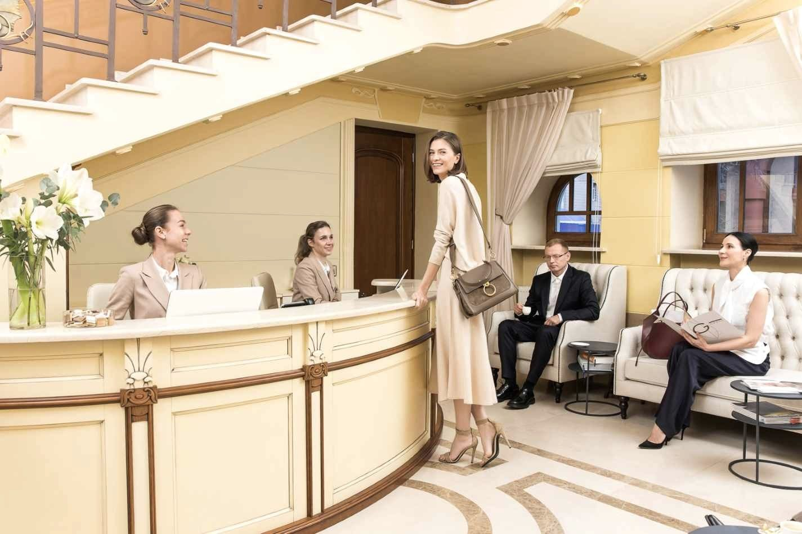
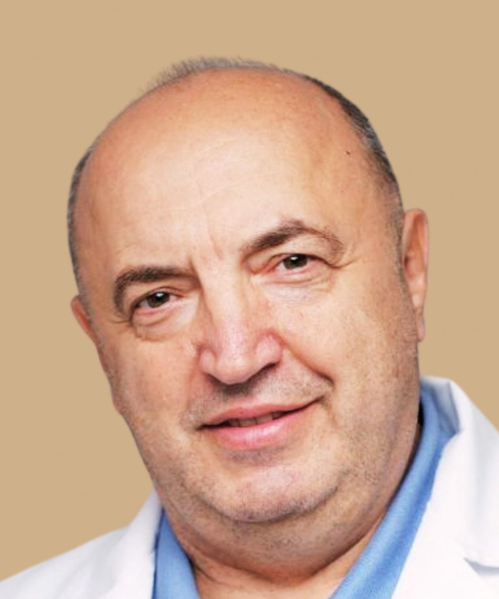

Пластична хірургія в Києві, де ціна операції вже містить рік супроводу
Консультації перед операцією, аналізи, стаціонар, 10 діб огляду й рік медичного супроводу — уже у вартості. Київ, вул. Загорівська, 14.
Записатися на консультацію
Ціна, у якій уже все
Ціни операцій «від» — як їх публікує клініка. Оберіть зону: суми змінюються, а перелік того, що входить у вартість, однаковий для кожної операції.
Ніс
- Ринопластика від 8 000 €
- Риносептопластика від 9 200 €
- Септопластика виконує ЛОР-хірург від 2 000 €
Консультація хірурга перед ринопластикою — від 3 000 грн, консультація ЛОР-хірурга — від 1 500 грн.
Обличчя
- Блефаропластика верхня від 1 200 €
- Блефаропластика нижня від 1 500 €
- Блефаропластика кругова від 2 500 €
- Кругова підтяжка обличчя від 4 000 €
- Платизмопластика від 2 500 €
- Ліпофілінг обличчя від 2 800 €
- Чік-ліфтинг від 1 700 €
- Хейлопластика від 1 600 €
- Видалення грудок Біша від 1 500 €
- Отопластика від 1 500 €
- Ліпосакція підборіддя від 1 500 €
- Булхорн від 1 400 €
- Апаратний ліфтинг FaceTite / AccuTite ціну називає хірург на консультації на консультації
Груди
- Збільшення грудей аугментаційна мамопластика, імпланти POLYTECH у вартості від 6 200 €
- Зменшення грудей редукційна мамопластика від 6 500 €
- Ліпофілінг грудей від 6 500 €
- Підтяжка грудей від 4 500 €
- Хірургічне лікування гінекомастії ціну називає хірург на консультації на консультації
Консультація перед ліпофілінгом грудей — 3 000 грн.
Тіло
- Круговий боділіфтинг від 6 600 €
- Ліпоскульптурування від 6 000 €
- Ліпофілінг сідниць від 5 500 €
- Абдомінопластика з ліпосакцією від 5 000 €
- Абдомінопластика стандартна від 4 000 €
- Абдомінопластика міні від 2 800 €
- Ліпосакція живота, боків і спини від 5 000 €
- Ліпосакція живота від 2 500 €
- Ліпосакція ніг і стегон від 3 000 €
- Ліпосакція рук від 3 000 €
- Апаратний ліфтинг тіла BodyTite ціну називає хірург на консультації на консультації
Суми в євро — еквівалент: розраховуються за курсом НБУ на дату оплати, оплата в гривні.
Маршрут пацієнта — від консультації до року супроводу
-
Консультація хірурга
Огляд, обговорення результату й 2D-моделювання до операції.
-
Аналізи
Аналізи перед операцією входять у вартість.
-
Медичний консиліум
План операції обговорюють лікарі разом, а не один хірург.
-
Операція та анестезія
Оперує профільний хірург: ніс — ЛОР-хірург.
-
Палата інтенсивної терапії
Перший етап відновлення — у палаті інтенсивної терапії клініки.
-
Стаціонар
Персональний менеджер, кухар і дієтичне меню.
-
10 діб огляду
Контрольні огляди протягом 10 діб після операції.
-
Рік медичного супроводу
Медичний супровід триває рік після операції.
Оперують профільні хірурги
Медичний директор, пластичний хірург
Андрій Петах
- Понад 20 років практики
- Понад 4000 операцій
Пластичні хірурги клініки
- Варсік Бикадорова
- Дмитрій Гомола
- Іван Смоланка
- Артем Андрющенко
- Олександр Романець
- Антон Висоцький

Ніс оперують ЛОР-хірурги
- Олег КомпанієцьПрофесор, доктор медичних наук
- Анна Коваль
Перед кожною операцією план обговорює медичний консиліум.
Усі лікарі клініки (Розділ у розробці)Маєток 1910 року на Загорівській
З 2007 року. Пластична хірургія — перший напрям клініки: спочатку вона була єдиним.
Закрита охоронювана територія. Конфіденційність, персональний менеджер, кухар і трансфер на Tesla.
Понад 5000 пацієнтів. За даними клініки. Маєток у стилі модерн відреставровано при заснуванні.
Записатися на консультацію
+380 44 499 7000- Мобільний+380 67 499 7007
- Viber+380 67 000 2118
- Telegram@graceee_clinic
- Поштаinfo@grace-clinics.com
Графік
- Понеділок — пʼятниця
- 08:00–20:00
- Субота
- 09:00–20:00
Для тих, хто обирає себе.